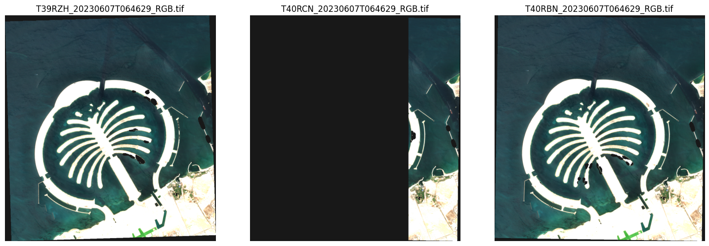
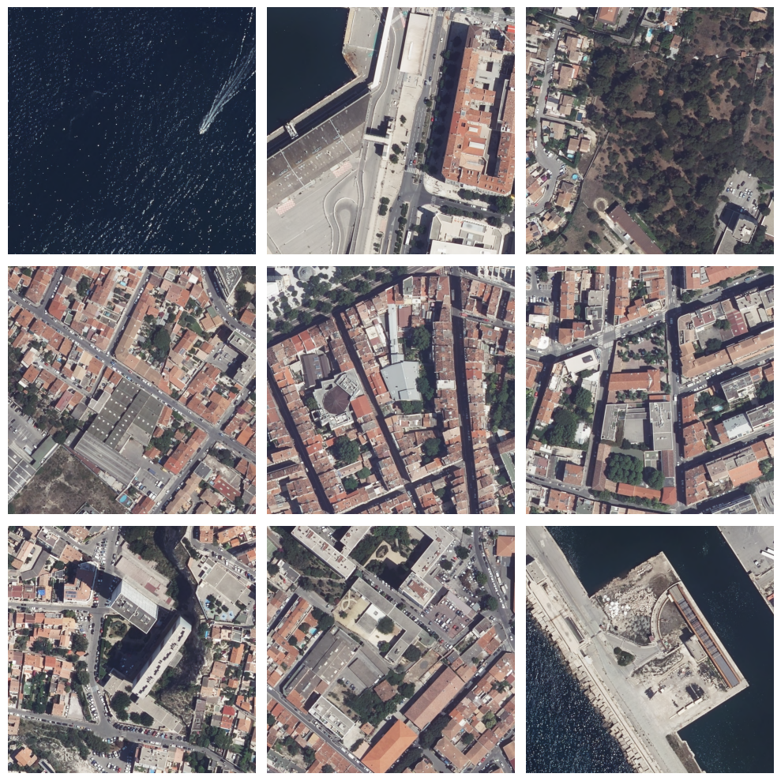

Object Segmentation and Detection#
The objective of this use case is to showcase the use of prompt object segmentation and detection.
Prompt Object Segmentation using SAM on Sentinel-2 Images#
1- Create an ROI to download Sentinel-2 images using QGIS in EPSG 4326.
2- Create a bounding box around the object of interest.
3- Perform prompt segmentation with SAM API.
4- Visualize the obtained results.
Object Detection using OD API on VHR Images#
1- Visualize some examples from the dataset.
2- Send POST requests to OD API to detect objects in the images.
3- Visualize results.
Object Detection and Segmentation using OD and SAM APIs on VHR Images#
1- Detect OBB using OD API.
2- Convert oriented bounding boxes to axis-aligned bounding boxes.
3- Visualize AABB on the images.
4- Send request to SAM API with the AABB as a prompt.
If you are running the notebook on Pangeo jupyterlab, run the following code to install some additional python libraries#
! pip3 install gdown opencv-contrib-python==4.7.0.72 opencv-python==4.7.0.72 opencv-python-headless==4.7.0.72
Requirement already satisfied: gdown in /Users/syam/Documents/code/eo4eu/igarss2024-eo4eu/myvenv/lib/python3.10/site-packages (5.2.0)
Requirement already satisfied: opencv-contrib-python==4.7.0.72 in /Users/syam/Documents/code/eo4eu/igarss2024-eo4eu/myvenv/lib/python3.10/site-packages (4.7.0.72)
Requirement already satisfied: opencv-python==4.7.0.72 in /Users/syam/Documents/code/eo4eu/igarss2024-eo4eu/myvenv/lib/python3.10/site-packages (4.7.0.72)
Collecting opencv-python-headless==4.7.0.72
Downloading opencv_python_headless-4.7.0.72-cp37-abi3-macosx_11_0_arm64.whl.metadata (18 kB)
Requirement already satisfied: numpy>=1.21.2 in /Users/syam/Documents/code/eo4eu/igarss2024-eo4eu/myvenv/lib/python3.10/site-packages (from opencv-contrib-python==4.7.0.72) (1.26.4)
Requirement already satisfied: beautifulsoup4 in /Users/syam/Documents/code/eo4eu/igarss2024-eo4eu/myvenv/lib/python3.10/site-packages (from gdown) (4.12.3)
Requirement already satisfied: filelock in /Users/syam/Documents/code/eo4eu/igarss2024-eo4eu/myvenv/lib/python3.10/site-packages (from gdown) (3.14.0)
Requirement already satisfied: requests[socks] in /Users/syam/Documents/code/eo4eu/igarss2024-eo4eu/myvenv/lib/python3.10/site-packages (from gdown) (2.31.0)
Requirement already satisfied: tqdm in /Users/syam/Documents/code/eo4eu/igarss2024-eo4eu/myvenv/lib/python3.10/site-packages (from gdown) (4.66.4)
Requirement already satisfied: soupsieve>1.2 in /Users/syam/Documents/code/eo4eu/igarss2024-eo4eu/myvenv/lib/python3.10/site-packages (from beautifulsoup4->gdown) (2.5)
Requirement already satisfied: charset-normalizer<4,>=2 in /Users/syam/Documents/code/eo4eu/igarss2024-eo4eu/myvenv/lib/python3.10/site-packages (from requests[socks]->gdown) (3.3.2)
Requirement already satisfied: idna<4,>=2.5 in /Users/syam/Documents/code/eo4eu/igarss2024-eo4eu/myvenv/lib/python3.10/site-packages (from requests[socks]->gdown) (3.7)
Requirement already satisfied: urllib3<3,>=1.21.1 in /Users/syam/Documents/code/eo4eu/igarss2024-eo4eu/myvenv/lib/python3.10/site-packages (from requests[socks]->gdown) (2.2.1)
Requirement already satisfied: certifi>=2017.4.17 in /Users/syam/Documents/code/eo4eu/igarss2024-eo4eu/myvenv/lib/python3.10/site-packages (from requests[socks]->gdown) (2024.2.2)
Requirement already satisfied: PySocks!=1.5.7,>=1.5.6 in /Users/syam/Documents/code/eo4eu/igarss2024-eo4eu/myvenv/lib/python3.10/site-packages (from requests[socks]->gdown) (1.7.1)
Downloading opencv_python_headless-4.7.0.72-cp37-abi3-macosx_11_0_arm64.whl (32.6 MB)
━━━━━━━━━━━━━━━━━━━━━━━━━━━━━━━━━━━━━━━━ 32.6/32.6 MB 9.1 MB/s eta 0:00:0000:0100:01m
?25hInstalling collected packages: opencv-python-headless
Successfully installed opencv-python-headless-4.7.0.72
[notice] A new release of pip is available: 23.3.1 -> 24.0
[notice] To update, run: pip install --upgrade pip
Required imports#
import os
import json
import requests
import glob
import gdown
import zipfile
import numpy as np
import geopandas as gpd
import tifffile as tiff
from matplotlib import pyplot as plt
from matplotlib import patches
import folium
from utils import geometry_to_coords,save_image_from_url,geometry_to_xy,geographic_to_pixel_bbox,get_filename_from_url,download_txtfile_from_url,obb_to_aabb,read_annotation_file
plt.ion()
<contextlib.ExitStack at 0x1668970a0>
URLs of the APIs to be used#
sentinel_api = "http://sentinel-api-test.dev.apps.eo4eu.eu"
sam_api = "http://sam-api-test.dev.apps.eo4eu.eu"
od_api = "http://od-api-test.dev.apps.eo4eu.eu"
Headers for the API requests#
headers = {
'accept': 'application/json',
'access-token': 'PFbUcE0/kAIYuYr1Q6xUiIekq7C0qMceyNmyN/pHZVU=',
'Content-Type': 'application/json'
}
Data directory#
data_path = "data/object_detection"
os.makedirs(data_path,exist_ok=True)
WORKFLOW1 Prompt Image Segmentation using SAM API and Sentinel-2 Images#
Create a shapefile on QGIS to define the ROI in EPSG 4326. Then read this file and convert the geomerty to xy coordinates to prepare for the API call#
roi_gdf = gpd.read_file("data/object_detection/sentinel_roi/palm_roi.shp")
geometry = roi_gdf.geometry.iloc[0]
coords = geometry_to_coords(geometry)
coords
[[54.939335770738644, 24.963109041667348],
[54.939335770738644, 25.06510904166735],
[55.04333577073864, 25.06510904166735],
[55.04333577073864, 24.963109041667348],
[54.939335770738644, 24.963109041667348]]
coords_lat_lon = [[lat, lon] for lon, lat in coords]
center_lat = sum(lat for lat, lon in coords_lat_lon) / len(coords_lat_lon)
center_lon = sum(lon for lat, lon in coords_lat_lon) / len(coords_lat_lon)
m = folium.Map(location=[center_lat, center_lon], zoom_start=13)
folium.TileLayer('openstreetmap').add_to(m)
folium.TileLayer(
tiles = 'https://server.arcgisonline.com/ArcGIS/rest/services/World_Imagery/MapServer/tile/{z}/{y}/{x}',
attr = 'Esri',
name = 'Esri Satellite',
overlay = False,
control = True
).add_to(m)
folium.Polygon(
locations=coords_lat_lon,
color='blue',
fill=True,
fill_color='blue',
fill_opacity=0.2
).add_to(m)
folium.LayerControl().add_to(m)
m
Make this Notebook Trusted to load map: File -> Trust Notebook
Call the Sentinel API to get RGB images of the ROI. The required parameters are:#
Geometry
Start date
End date
Cloud cover
Index
data = {
"geometry":coords,
"start_date":"2023-06-05",
"end_date":"2023-06-08",
"cloud_cover":"10",
"index":"RGB"
}
response = requests.post(os.path.join(sentinel_api,"api/v1/s2l2a/roi/process"), headers=headers, json=data)
print(response.text)
task_id = json.loads(response.content.decode())
{"task_id":"89839370-4215-499f-9d94-18f31b27b7a9"}
Monitor task status#
params = {'task_id': task_id["task_id"]}
response = requests.get(os.path.join(sentinel_api,"api/v1/task/status"), headers=headers, params=params)
print(response.text)
{"task_id":"ae51b719-9b2a-435e-9d5a-3a947304fc6e","state":"SUCCESS","result":"[{'image': 'L2/tiles/39/R/ZH/S2B_MSIL2A_20230607T064629_N0509_R020_T39RZH_20230607T093051.SAFE', 'processed': True, 'url': 'https://object-store.os-api.cci1.ecmwf.int/MoBucket/ae51b719-9b2a-435e-9d5a-3a947304fc6e/T39RZH_20230607T064629_RGB.tif?AWSAccessKeyId=e850aff0dd5749a0a8df9f909014049c&Signature=TYzeo209c9%2FcqpAgJKuhSyYUss4%3D&Expires=1718911441', 'uri': 's3://MoBucket/ae51b719-9b2a-435e-9d5a-3a947304fc6e/T39RZH_20230607T064629_RGB.tif'}, {'image': 'L2/tiles/40/R/CN/S2B_MSIL2A_20230607T064629_N0509_R020_T40RCN_20230607T093051.SAFE', 'processed': True, 'url': 'https://object-store.os-api.cci1.ecmwf.int/MoBucket/ae51b719-9b2a-435e-9d5a-3a947304fc6e/T40RCN_20230607T064629_RGB.tif?AWSAccessKeyId=e850aff0dd5749a0a8df9f909014049c&Signature=VP2%2BlemaZCjI5F4C0wyeqPBYjIA%3D&Expires=1718911446', 'uri': 's3://MoBucket/ae51b719-9b2a-435e-9d5a-3a947304fc6e/T40RCN_20230607T064629_RGB.tif'}, {'image': 'L2/tiles/40/R/BN/S2B_MSIL2A_20230607T064629_N0509_R020_T40RBN_20230607T093051.SAFE', 'processed': True, 'url': 'https://object-store.os-api.cci1.ecmwf.int/MoBucket/ae51b719-9b2a-435e-9d5a-3a947304fc6e/T40RBN_20230607T064629_RGB.tif?AWSAccessKeyId=e850aff0dd5749a0a8df9f909014049c&Signature=jeKjxLGPbmphPw1kmK96PXBu%2F%2FU%3D&Expires=1718911450', 'uri': 's3://MoBucket/ae51b719-9b2a-435e-9d5a-3a947304fc6e/T40RBN_20230607T064629_RGB.tif'}]"}
Get results using task ID#
params = {'task_id': task_id["task_id"]}
response = requests.get(os.path.join(sentinel_api,"api/v1/s2l2a/roi/process"), headers=headers, params=params)
results = response.json()
print (results)
{'results': [{'image': 'L2/tiles/39/R/ZH/S2B_MSIL2A_20230607T064629_N0509_R020_T39RZH_20230607T093051.SAFE', 'processed': True, 'url': 'https://object-store.os-api.cci1.ecmwf.int/MoBucket/ae51b719-9b2a-435e-9d5a-3a947304fc6e/T39RZH_20230607T064629_RGB.tif?AWSAccessKeyId=e850aff0dd5749a0a8df9f909014049c&Signature=TYzeo209c9%2FcqpAgJKuhSyYUss4%3D&Expires=1718911441', 'uri': 's3://MoBucket/ae51b719-9b2a-435e-9d5a-3a947304fc6e/T39RZH_20230607T064629_RGB.tif'}, {'image': 'L2/tiles/40/R/CN/S2B_MSIL2A_20230607T064629_N0509_R020_T40RCN_20230607T093051.SAFE', 'processed': True, 'url': 'https://object-store.os-api.cci1.ecmwf.int/MoBucket/ae51b719-9b2a-435e-9d5a-3a947304fc6e/T40RCN_20230607T064629_RGB.tif?AWSAccessKeyId=e850aff0dd5749a0a8df9f909014049c&Signature=VP2%2BlemaZCjI5F4C0wyeqPBYjIA%3D&Expires=1718911446', 'uri': 's3://MoBucket/ae51b719-9b2a-435e-9d5a-3a947304fc6e/T40RCN_20230607T064629_RGB.tif'}, {'image': 'L2/tiles/40/R/BN/S2B_MSIL2A_20230607T064629_N0509_R020_T40RBN_20230607T093051.SAFE', 'processed': True, 'url': 'https://object-store.os-api.cci1.ecmwf.int/MoBucket/ae51b719-9b2a-435e-9d5a-3a947304fc6e/T40RBN_20230607T064629_RGB.tif?AWSAccessKeyId=e850aff0dd5749a0a8df9f909014049c&Signature=jeKjxLGPbmphPw1kmK96PXBu%2F%2FU%3D&Expires=1718911450', 'uri': 's3://MoBucket/ae51b719-9b2a-435e-9d5a-3a947304fc6e/T40RBN_20230607T064629_RGB.tif'}]}
Save results from signed URL to local files#
rgb_output_path = os.path.join(data_path,"sentinel_rgb_images")
os.makedirs(rgb_output_path,exist_ok=True)
list_downloaded_imgs = []
for res in results["results"]:
file_name = get_filename_from_url(res["url"])
output_file_path = os.path.join(rgb_output_path,file_name)
save_image_from_url(res["url"],output_file_path)
list_downloaded_imgs.append(output_file_path)
Image successfully saved to data/object_detection/sentinel_rgb_images/T39RZH_20230607T064629_RGB.tif
Image successfully saved to data/object_detection/sentinel_rgb_images/T40RCN_20230607T064629_RGB.tif
Image successfully saved to data/object_detection/sentinel_rgb_images/T40RBN_20230607T064629_RGB.tif
Visualize results#
num_images = len(list_downloaded_imgs)
cols = 3
rows = (num_images // cols) + (num_images % cols > 0)
plt.figure(figsize=(15, 5 * rows))
for i, image_path in enumerate(list_downloaded_imgs):
if not os.path.exists(image_path):
print(f"Image not found: {image_path}")
continue
img = tiff.imread(image_path)
plt.subplot(rows, cols, i + 1)
plt.imshow(img.astype("uint8"))
plt.axis('off')
plt.title(os.path.basename(image_path))
plt.tight_layout()
plt.show()

Read the bounding box and convert it to x_min,y_min,x_max,y_max#
bbox_gdf = gpd.read_file("data/object_detection/sentinel_roi/bbox.shp")
list_bboxes = geometry_to_xy(bbox_gdf)
list_bboxes
[[54.94884426946525,
24.969402298985127,
55.034844269465246,
25.04040229898513]]
Convert geographic coordinates to pixel coordinates#
img = tiff.imread(list_downloaded_imgs[2])
roi_bbox = geometry_to_xy(roi_gdf)[0]
pixel_bboxes = geographic_to_pixel_bbox(np.array(list_bboxes),img.shape[1],img.shape[0],roi_bbox[1],
roi_bbox[3],
roi_bbox[0],
roi_bbox[2])
pixel_bboxes
array([[ 97, 277, 980, 1076]])
Visualize the image and the pixel bounding box for verification#
fig, ax = plt.subplots(1)
# Display the image
ax.imshow(img.astype("uint8"))
# Add the bounding boxes
for box in pixel_bboxes:
x_min, y_min, x_max, y_max = box
width = x_max - x_min
height = y_max - y_min
rect = patches.Rectangle((x_min, y_min), width, height, linewidth=2, edgecolor='r', facecolor='none')
ax.add_patch(rect)
# Display the plot
plt.show()

Segment the image with SAM API using the bounding box as a prompt#
rgb_img_uri = results["results"][2]["uri"]
data = {
"list_images": [
{
"image_name": os.path.basename(rgb_img_uri),
"image_uri": rgb_img_uri,
"bboxes": pixel_bboxes.tolist(),
"points": None,
"labels": None
},
]
}
response = requests.post(os.path.join(sam_api,"api/v1/prompt"),headers=headers,json=data)
print (response.text)
task_id = json.loads(response.content.decode())
{"task_id":"8bd7d1e4-0c45-4276-af65-53ea54ab3486"}
Monitor task status#
params = {'task_id': task_id["task_id"]}
response = requests.get(os.path.join(sam_api,"api/v1/task/status"), headers=headers, params=params)
print(response.text)
{"task_id":"8bd7d1e4-0c45-4276-af65-53ea54ab3486","state":"SUCCESS","result":"[{'image_uri': 's3://MoBucket/ae51b719-9b2a-435e-9d5a-3a947304fc6e/T40RBN_20230607T064629_RGB.tif', 'processed': True, 'png_result_url': 'https://object-store.os-api.cci1.ecmwf.int/MoBucket/8bd7d1e4-0c45-4276-af65-53ea54ab3486/T40RBN_20230607T064629_RGB_bbox_mask.png?AWSAccessKeyId=e850aff0dd5749a0a8df9f909014049c&Signature=9qXz3QptQfXwUTS%2BnTdXZ6%2Bb0KY%3D&Expires=1718911529', 'png_result_uri': 's3://MoBucket/8bd7d1e4-0c45-4276-af65-53ea54ab3486/T40RBN_20230607T064629_RGB_bbox_mask.png', 'tif_result_url': 'https://object-store.os-api.cci1.ecmwf.int/MoBucket/8bd7d1e4-0c45-4276-af65-53ea54ab3486/T40RBN_20230607T064629_RGB_bbox_mask.tif?AWSAccessKeyId=e850aff0dd5749a0a8df9f909014049c&Signature=e7YXTpvAJAZbST5UOpPz0he2aS0%3D&Expires=1718911529', 'tif_result_uri': 's3://MoBucket/8bd7d1e4-0c45-4276-af65-53ea54ab3486/T40RBN_20230607T064629_RGB_bbox_mask.tif'}]"}
Get the results#
params = {'task_id': task_id["task_id"]}
response = requests.get(os.path.join(sam_api,"api/v1/prompt"), headers=headers, params=params)
results = response.json()
print (results)
{'results': [{'image_uri': 's3://MoBucket/ae51b719-9b2a-435e-9d5a-3a947304fc6e/T40RBN_20230607T064629_RGB.tif', 'processed': True, 'png_result_url': 'https://object-store.os-api.cci1.ecmwf.int/MoBucket/8bd7d1e4-0c45-4276-af65-53ea54ab3486/T40RBN_20230607T064629_RGB_bbox_mask.png?AWSAccessKeyId=e850aff0dd5749a0a8df9f909014049c&Signature=9qXz3QptQfXwUTS%2BnTdXZ6%2Bb0KY%3D&Expires=1718911529', 'png_result_uri': 's3://MoBucket/8bd7d1e4-0c45-4276-af65-53ea54ab3486/T40RBN_20230607T064629_RGB_bbox_mask.png', 'tif_result_url': 'https://object-store.os-api.cci1.ecmwf.int/MoBucket/8bd7d1e4-0c45-4276-af65-53ea54ab3486/T40RBN_20230607T064629_RGB_bbox_mask.tif?AWSAccessKeyId=e850aff0dd5749a0a8df9f909014049c&Signature=e7YXTpvAJAZbST5UOpPz0he2aS0%3D&Expires=1718911529', 'tif_result_uri': 's3://MoBucket/8bd7d1e4-0c45-4276-af65-53ea54ab3486/T40RBN_20230607T064629_RGB_bbox_mask.tif'}]}
Save results to local file#
segmentation_output_path = os.path.join(data_path,"sam_segmentation")
os.makedirs(segmentation_output_path,exist_ok=True)
sam_output_tif_path = os.path.join(segmentation_output_path,"prompt_mask_bbox.tif")
save_image_from_url(results["results"][0]["tif_result_url"],sam_output_tif_path)
Image successfully saved to data/object_detection/sam_segmentation/prompt_mask_bbox.tif
Visualize the results#
rgb_img = tiff.imread(list_downloaded_imgs[2])
msk_img = tiff.imread(sam_output_tif_path)
plt.figure(figsize=(10, 5))
plt.subplot(1, 2, 1)
plt.imshow(rgb_img.astype("uint8"))
plt.axis('off')
plt.title('Original Image')
msk_img[msk_img==0] = np.nan
plt.subplot(1, 2, 2)
plt.imshow(rgb_img.astype("uint8"))
plt.imshow(msk_img, cmap='jet', alpha=0.5)
plt.axis('off')
plt.title('Mask Overlay')
plt.tight_layout()
plt.show()
WORKFLOW 2 Object Detection using OD API and VHR Images#
Download the dataset from GDrive#
file_id = "1jfc3mPcGN3ufs3aw9LthG9SWvNQorCoK"
zip_destination = "data/object_detection/tiles.zip"
os.makedirs(os.path.dirname(zip_destination), exist_ok=True)
url = f"https://drive.google.com/uc?id={file_id}"
gdown.download(url, zip_destination, quiet=False)
with zipfile.ZipFile(zip_destination, 'r') as zip_ref:
zip_ref.extractall(data_path)
os.remove(zip_destination)
Downloading...
From (original): https://drive.google.com/uc?id=1jfc3mPcGN3ufs3aw9LthG9SWvNQorCoK
From (redirected): https://drive.google.com/uc?id=1jfc3mPcGN3ufs3aw9LthG9SWvNQorCoK&confirm=t&uuid=e1781714-7b85-40f5-b70b-32544efe22a6
To: /Users/syam/Documents/code/eo4eu/igarss2024-eo4eu/docs/data/object_detection/tiles.zip
100%|██████████| 1.37G/1.37G [02:37<00:00, 8.66MB/s]
Get list of images from local directory. These images are duplicated on S3 storage to be found by the model and avoid uploading them again#
list_imgs = glob.glob(os.path.join(data_path, 'tiles/*.tif'))
len(list_imgs)
625
Visualize some examples of these images#
num_images = 9
random_indices = np.random.choice(len(list_imgs), num_images, replace=False)
random_images = [tiff.imread(list_imgs[i]) for i in random_indices]
figsize = (10, 10)
fig, axes = plt.subplots(3, 3, figsize=figsize)
fig.subplots_adjust(hspace=0.3, wspace=0.3)
axes = axes.ravel()
for i in range(num_images):
axes[i].imshow(random_images[i], cmap='gray')
axes[i].axis('off')
plt.tight_layout()
plt.show()

Send request to the OD API to detect all objects that can be detected by the model#
classes = {
"plane": 0,
"ship": 1,
"storage-tank": 2,
"baseball-diamond": 3,
"tennis-court": 4,
"basketball-court": 5,
"ground-track-field": 6,
"harbor": 7,
"bridge": 8,
"large-vehicle": 9,
"small-vehicle": 10,
"helicopter": 11,
"roundabout": 12,
"soccer-ball-field": 13,
"swimming-pool": 14,
"container-crane": 15,
"airport": 16,
"helipad": 17
}
list_tasks = []
img_files = [list_imgs[i] for i in random_indices]
img_files = [os.path.basename(img) for img in img_files]
data = {"list_images":[{"image_uri":os.path.join("s3://MoBucket/obj-det",img),"classes":classes} for img in img_files]}
response = requests.post(os.path.join(od_api,"api/v1/yolov8/obb/detect"),headers=headers,json=data)
task_id = json.loads(response.content.decode())
list_tasks.append(task_id["task_id"])
Monitoring the status of the tasks#
for idx, task_id in enumerate(list_tasks):
print (idx)
params = {'task_id': task_id}
response = requests.get(os.path.join(od_api,"api/v1/task/status"), headers=headers, params=params)
print(response.text)
0
{"task_id":"22658d13-b171-4e85-acd5-9515bdc338f5","state":"SUCCESS","result":"[{'image_uri': 's3://MoBucket/obj-det/patch_88.tif', 'processed': True, 'result_url': None, 'result_uri': None}, {'image_uri': 's3://MoBucket/obj-det/patch_235.tif', 'processed': True, 'result_url': 'https://object-store.os-api.cci1.ecmwf.int/MoBucket/22658d13-b171-4e85-acd5-9515bdc338f5/patch_235.txt?AWSAccessKeyId=e850aff0dd5749a0a8df9f909014049c&Signature=2YaJ0NilAz0QALghKqrjR5simbQ%3D&Expires=1718911754', 'result_uri': 's3://MoBucket/22658d13-b171-4e85-acd5-9515bdc338f5/patch_235.txt'}, {'image_uri': 's3://MoBucket/obj-det/patch_550.tif', 'processed': True, 'result_url': 'https://object-store.os-api.cci1.ecmwf.int/MoBucket/22658d13-b171-4e85-acd5-9515bdc338f5/patch_550.txt?AWSAccessKeyId=e850aff0dd5749a0a8df9f909014049c&Signature=PhTOCpu44y%2FhRGtdq8xorA7v%2BvU%3D&Expires=1718911755', 'result_uri': 's3://MoBucket/22658d13-b171-4e85-acd5-9515bdc338f5/patch_550.txt'}, {'image_uri': 's3://MoBucket/obj-det/patch_402.tif', 'processed': True, 'result_url': 'https://object-store.os-api.cci1.ecmwf.int/MoBucket/22658d13-b171-4e85-acd5-9515bdc338f5/patch_402.txt?AWSAccessKeyId=e850aff0dd5749a0a8df9f909014049c&Signature=LhL%2FwjcO%2BxGFb6c0u9hchyv%2Bbew%3D&Expires=1718911756', 'result_uri': 's3://MoBucket/22658d13-b171-4e85-acd5-9515bdc338f5/patch_402.txt'}, {'image_uri': 's3://MoBucket/obj-det/patch_438.tif', 'processed': True, 'result_url': 'https://object-store.os-api.cci1.ecmwf.int/MoBucket/22658d13-b171-4e85-acd5-9515bdc338f5/patch_438.txt?AWSAccessKeyId=e850aff0dd5749a0a8df9f909014049c&Signature=0djIoQ36qPKJTvdhNreokuzQ6I4%3D&Expires=1718911757', 'result_uri': 's3://MoBucket/22658d13-b171-4e85-acd5-9515bdc338f5/patch_438.txt'}, {'image_uri': 's3://MoBucket/obj-det/patch_517.tif', 'processed': True, 'result_url': 'https://object-store.os-api.cci1.ecmwf.int/MoBucket/22658d13-b171-4e85-acd5-9515bdc338f5/patch_517.txt?AWSAccessKeyId=e850aff0dd5749a0a8df9f909014049c&Signature=DSvABFzQ2DT%2BebygdoITIWLlTDw%3D&Expires=1718911757', 'result_uri': 's3://MoBucket/22658d13-b171-4e85-acd5-9515bdc338f5/patch_517.txt'}, {'image_uri': 's3://MoBucket/obj-det/patch_145.tif', 'processed': True, 'result_url': 'https://object-store.os-api.cci1.ecmwf.int/MoBucket/22658d13-b171-4e85-acd5-9515bdc338f5/patch_145.txt?AWSAccessKeyId=e850aff0dd5749a0a8df9f909014049c&Signature=FnNANFDLMz8KMdpdPBg2PT6I4hU%3D&Expires=1718911759', 'result_uri': 's3://MoBucket/22658d13-b171-4e85-acd5-9515bdc338f5/patch_145.txt'}, {'image_uri': 's3://MoBucket/obj-det/patch_404.tif', 'processed': True, 'result_url': 'https://object-store.os-api.cci1.ecmwf.int/MoBucket/22658d13-b171-4e85-acd5-9515bdc338f5/patch_404.txt?AWSAccessKeyId=e850aff0dd5749a0a8df9f909014049c&Signature=RZnEw6f3XOvTxhy5IU%2F9CWbb30Y%3D&Expires=1718911760', 'result_uri': 's3://MoBucket/22658d13-b171-4e85-acd5-9515bdc338f5/patch_404.txt'}, {'image_uri': 's3://MoBucket/obj-det/patch_181.tif', 'processed': True, 'result_url': 'https://object-store.os-api.cci1.ecmwf.int/MoBucket/22658d13-b171-4e85-acd5-9515bdc338f5/patch_181.txt?AWSAccessKeyId=e850aff0dd5749a0a8df9f909014049c&Signature=6jlixHGMK8qajyf1Rxy25ume%2BOo%3D&Expires=1718911763', 'result_uri': 's3://MoBucket/22658d13-b171-4e85-acd5-9515bdc338f5/patch_181.txt'}]"}
Save results to local files#
bbox_output_path = "data/object_detection/vhr_bboxes"
os.makedirs(bbox_output_path,exist_ok=True)
for task in list_tasks:
params = {'task_id': task}
response = requests.get(os.path.join(od_api,"api/v1/yolov8/obb/detect"), headers=headers, params=params)
results = response.json()
results = results["results"]
for res in results:
result_url = res["result_url"]
if result_url is not None:
fname = get_filename_from_url(result_url)
output_fname = os.path.join(bbox_output_path,fname)
download_txtfile_from_url(result_url,output_fname)
File downloaded successfully as data/object_detection/vhr_bboxes/patch_235.txt
File downloaded successfully as data/object_detection/vhr_bboxes/patch_550.txt
File downloaded successfully as data/object_detection/vhr_bboxes/patch_402.txt
File downloaded successfully as data/object_detection/vhr_bboxes/patch_438.txt
File downloaded successfully as data/object_detection/vhr_bboxes/patch_517.txt
File downloaded successfully as data/object_detection/vhr_bboxes/patch_145.txt
File downloaded successfully as data/object_detection/vhr_bboxes/patch_404.txt
File downloaded successfully as data/object_detection/vhr_bboxes/patch_181.txt
Visualize the results using Dash Plotly if you are running this notebook on your machine#
import colorsys
import io
import dash
from dash import dcc, html
import dash_daq as daq
from dash.dependencies import Input, Output
import os
import cv2
import base64
from PIL import Image
import numpy as np
CATEGORIES = {
"plane": 0,
"ship": 1,
"storage-tank": 2,
"baseball-diamond": 3,
"tennis-court": 4,
"basketball-court": 5,
"ground-track-field": 6,
"harbor": 7,
"bridge": 8,
"large-vehicle": 9,
"small-vehicle": 10,
"helicopter": 11,
"roundabout": 12,
"soccer-ball-field": 13,
"swimming-pool": 14,
"container-crane": 15,
"airport": 16,
"helipad": 17,
}
app = dash.Dash(__name__)
image_directory = "data/object_detection/tiles"
annotation_directory = "data/object_detection/vhr_bboxes"
def generate_class_colors(num_classes):
hsv_colors = [(x * 1.0 / num_classes, 1.0, 1.0) for x in range(num_classes)]
rgb_colors = [
tuple(int(255 * y) for y in colorsys.hsv_to_rgb(*color)) for color in hsv_colors
]
return rgb_colors
def get_image_options():
images = []
annotations_paths = []
for filename in os.listdir(image_directory):
if filename.endswith((".png", ".jpg", ".jpeg",".tif")):
annotation_filename = os.path.splitext(filename)[0] + ".txt"
annotation_path = os.path.join(annotation_directory, annotation_filename)
if os.path.exists(annotation_path):
images.append(filename)
annotations_paths.append(annotation_path)
return [
{"label": image, "value": annotation_path}
for image, annotation_path in zip(images, annotations_paths)
]
num_classes = len(CATEGORIES)
class_colors = generate_class_colors(num_classes)
app.layout = html.Div(
[
html.H1("Image Annotation Viewer", style={"text-align": "center"}),
dcc.Dropdown(
id="image-dropdown",
options=get_image_options(),
multi=False,
value=get_image_options()[0]["value"],
style={"width": "50%", "margin": "auto", "margin-top": "20px"},
),
html.H3("Toggle annotation"),
html.Div(
daq.ToggleSwitch(id="annotation-toggle", value=True),
style={"width": "50%", "margin": "auto", "margin-top": "20px"},
),
html.H3("Toggle label"),
html.Div(
daq.ToggleSwitch(id="label-toggle", value=True),
style={"width": "50%", "margin": "auto", "margin-top": "20px"},
),
html.Div(
[
html.Img(
id="image-display", style={"width": "100%", "margin-top": "20px"}
)
],
style={"text-align": "center"},
),
],
style={"font-family": "Arial", "background-color": "#f5f5f5", "padding": "20px"},
)
@app.callback(
Output("image-display", "src"),
Input("image-dropdown", "value"),
Input("annotation-toggle", "value"),
Input("label-toggle", "value"),
)
def update_image(selected_annotation_path, show_annotation, show_label):
if selected_annotation_path is None:
return
image_filename = (
os.path.basename(selected_annotation_path).split(".txt")[0] + ".tif"
)
image_path = os.path.join(image_directory, image_filename)
img = Image.open(image_path)
img_np = np.array(img)
if show_annotation:
try:
annotations = read_annotation_file(selected_annotation_path)
for annotation in annotations:
class_id = annotation["class_id"]
class_name = [
name for name, id in CATEGORIES.items() if id == class_id
][0]
coordinates = np.array(annotation["coordinates"]).reshape(-1, 2)
coordinates = coordinates.astype(int)
color = class_colors[class_id]
img_np = cv2.polylines(
img_np, [coordinates], isClosed=True, color=color, thickness=2
)
if show_label:
label_position = (
int(coordinates[0, 0]),
int(coordinates[0, 1] - 5),
)
cv2.putText(
img_np,
class_name,
label_position,
cv2.FONT_HERSHEY_SIMPLEX,
0.5,
color,
2,
)
except OSError as e:
pass
img_pil = Image.fromarray(img_np)
img_byte_array = io.BytesIO()
img_pil.save(img_byte_array, format="PNG")
img_base64 = base64.b64encode(img_byte_array.getvalue()).decode("utf-8")
img_src = f"data:image/png;base64,{img_base64}"
return img_src
if __name__ == "__main__":
app.run()
If you are running the notebook on Pangeo jupyterhub, use matplotlib for plotting to show the images#
import colorsys
import os
from PIL import Image
import numpy as np
import matplotlib.pyplot as plt
CATEGORIES = {
"plane": 0,
"ship": 1,
"storage-tank": 2,
"baseball-diamond": 3,
"tennis-court": 4,
"basketball-court": 5,
"ground-track-field": 6,
"harbor": 7,
"bridge": 8,
"large-vehicle": 9,
"small-vehicle": 10,
"helicopter": 11,
"roundabout": 12,
"soccer-ball-field": 13,
"swimming-pool": 14,
"container-crane": 15,
"airport": 16,
"helipad": 17,
}
image_directory = "data/object_detection/tiles"
annotation_directory = "data/object_detection/vhr_bboxes"
def generate_class_colors(num_classes):
hsv_colors = [(x * 1.0 / num_classes, 1.0, 1.0) for x in range(num_classes)]
rgb_colors = [
tuple(int(255 * y) for y in colorsys.hsv_to_rgb(*color)) for color in hsv_colors
]
return rgb_colors
def draw_annotations(image_path, annotation_path, show_annotation=True, show_label=True):
img = Image.open(image_path)
img_np = np.array(img)
fig, ax = plt.subplots(1)
ax.imshow(img_np)
if show_annotation:
annotations = read_annotation_file(annotation_path)
class_colors = generate_class_colors(len(CATEGORIES))
for annotation in annotations:
class_id = annotation['class_id']
class_name = [name for name, id in CATEGORIES.items() if id == class_id][0]
coordinates = np.array(annotation['coordinates']).reshape(-1, 2)
color = class_colors[class_id]
color = tuple(c/255.0 for c in color)
polygon = plt.Polygon(coordinates, edgecolor=color, fill=None, linewidth=2)
ax.add_patch(polygon)
if show_label:
label_position = coordinates[0]
ax.text(label_position[0], label_position[1], class_name, color=color, fontsize=12, weight='bold')
plt.axis('off')
plt.show()
# Main function to process all images
def process_images():
for filename in os.listdir(annotation_directory):
if filename.endswith(".txt"):
annotation_path = os.path.join(annotation_directory, filename)
if os.path.exists(annotation_path):
image_path = os.path.join(image_directory, os.path.basename(filename).split(".")[0]+".tif")
draw_annotations(image_path, annotation_path,show_label=False)
if __name__ == '__main__':
process_images()

WORKFLOW3 Object Detection and Segmentation using OD and SAM APIs on VHR Images#
Read annotation from one example, convert it from OBB to AABB and and use the detected bounding boxes as prompts for SAM API to segment objects#
img_files
['patch_88.tif',
'patch_235.tif',
'patch_550.tif',
'patch_402.tif',
'patch_438.tif',
'patch_517.tif',
'patch_145.tif',
'patch_404.tif',
'patch_181.tif']
example_filename = img_files[1]
example_tif = os.path.join("data/object_detection/tiles",example_filename)
example_obb = os.path.join("data/object_detection/vhr_bboxes",example_filename.split(".")[0]+".txt")
example_tif_s3 = os.path.join("s3://MoBucket/obj-det",example_filename)
annotations = read_annotation_file(example_obb)
img_tif = tiff.imread(example_tif)
Convert OBB to ABB and visualize for verification#
import math
fig, ax = plt.subplots(1)
# Display the image
ax.imshow(img_tif.astype("uint8"))
# Add the bounding boxes
list_aabb_bbox = []
for box in annotations:
obb = box["coordinates"]
x_min,y_min,x_max,y_max = obb_to_aabb(obb)
x_min,y_min,x_max,y_max = math.ceil(x_min),math.ceil(y_min),math.ceil(x_max),math.ceil(y_max)
list_aabb_bbox.append([x_min,y_min,x_max,y_max])
width = x_max - x_min
height = y_max - y_min
rect = patches.Rectangle((x_min, y_min), width, height, linewidth=2, edgecolor='r', facecolor='none')
ax.add_patch(rect)
# Display the plot
plt.show()
Send request with the bbox prompts to SAM API#
data = {
"list_images": [
{
"image_name": os.path.basename(example_tif_s3),
"image_uri": example_tif_s3,
"bboxes": list_aabb_bbox,
"points": None,
"labels": None
},
]
}
response = requests.post(os.path.join(sam_api,"api/v1/prompt"),headers=headers,json=data)
print (response.text)
task_id = json.loads(response.content.decode())
{"task_id":"76002c7b-5a80-4302-a4be-e8cc585c6b9e"}
Monitor the task status#
params = {'task_id': task_id["task_id"]}
response = requests.get(os.path.join(sam_api,"api/v1/task/status"), headers=headers, params=params)
print(response.text)
{"task_id":"76002c7b-5a80-4302-a4be-e8cc585c6b9e","state":"SUCCESS","result":"[{'image_uri': 's3://MoBucket/obj-det/patch_235.tif', 'processed': True, 'png_result_url': 'https://object-store.os-api.cci1.ecmwf.int/MoBucket/76002c7b-5a80-4302-a4be-e8cc585c6b9e/patch_235_bbox_mask.png?AWSAccessKeyId=e850aff0dd5749a0a8df9f909014049c&Signature=kRMZeM348UZII5kaQAOyB46q2vU%3D&Expires=1718913413', 'png_result_uri': 's3://MoBucket/76002c7b-5a80-4302-a4be-e8cc585c6b9e/patch_235_bbox_mask.png', 'tif_result_url': 'https://object-store.os-api.cci1.ecmwf.int/MoBucket/76002c7b-5a80-4302-a4be-e8cc585c6b9e/patch_235_bbox_mask.tif?AWSAccessKeyId=e850aff0dd5749a0a8df9f909014049c&Signature=CIdB5q%2B%2BMrJD0PGKsiETyNKZWBE%3D&Expires=1718913413', 'tif_result_uri': 's3://MoBucket/76002c7b-5a80-4302-a4be-e8cc585c6b9e/patch_235_bbox_mask.tif'}]"}
Get results#
params = {'task_id': task_id["task_id"]}
response = requests.get(os.path.join(sam_api,"api/v1/prompt"), headers=headers, params=params)
results = response.json()
print (results)
{'results': [{'image_uri': 's3://MoBucket/obj-det/patch_235.tif', 'processed': True, 'png_result_url': 'https://object-store.os-api.cci1.ecmwf.int/MoBucket/76002c7b-5a80-4302-a4be-e8cc585c6b9e/patch_235_bbox_mask.png?AWSAccessKeyId=e850aff0dd5749a0a8df9f909014049c&Signature=kRMZeM348UZII5kaQAOyB46q2vU%3D&Expires=1718913413', 'png_result_uri': 's3://MoBucket/76002c7b-5a80-4302-a4be-e8cc585c6b9e/patch_235_bbox_mask.png', 'tif_result_url': 'https://object-store.os-api.cci1.ecmwf.int/MoBucket/76002c7b-5a80-4302-a4be-e8cc585c6b9e/patch_235_bbox_mask.tif?AWSAccessKeyId=e850aff0dd5749a0a8df9f909014049c&Signature=CIdB5q%2B%2BMrJD0PGKsiETyNKZWBE%3D&Expires=1718913413', 'tif_result_uri': 's3://MoBucket/76002c7b-5a80-4302-a4be-e8cc585c6b9e/patch_235_bbox_mask.tif'}]}
Save results to local file#
sam_output_tif_path = os.path.join(segmentation_output_path,"prompt_mask_patch_214.tif")
save_image_from_url(results["results"][0]["tif_result_url"],sam_output_tif_path)
Image successfully saved to data/object_detection/sam_segmentation/prompt_mask_patch_214.tif
Visualize results#
msk_img = tiff.imread(sam_output_tif_path)
plt.figure(figsize=(10, 5))
plt.subplot(1, 2, 1)
plt.imshow(img_tif.astype("uint8"))
plt.axis('off')
plt.title('Original Image')
msk_img[msk_img==0] = np.nan
plt.subplot(1, 2, 2)
plt.imshow(img_tif.astype("uint8"))
plt.imshow(msk_img, cmap='jet', alpha=0.5)
plt.axis('off')
plt.title('Mask Overlay')
plt.tight_layout()
plt.show()